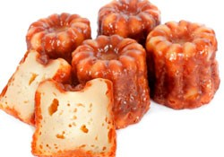

◀ ⎙
Cannelés légers
Pour 16 Personnes,
Temps de préparation : ,
Temps de cuisson : ,

Ingrédients
- 50 cl de lait
- 1 pincée de sel
- 2 oeufs entiers
- 2 jaunes d'oeufs
- 1/2 gousse de vanille
- 1 c. à s. de rhum
- 100 g de farine
- 150 g de fructose
- 50 g de beurre
Préparation
- Faites bouillir le lait avec la gousse de vanille et le beurre.
- Pendant ce temps, mélangez la farine, le fructose puis incorporez les œufs d'un seul coup.
- Ajoutez le lait bouillant.
- Mélangez doucement afin d'obtenir une préparation aussi fluide qu'une pâte à crêpes.
- Laissez refroidir, puis ajoutez le rhum.
- Placez au réfrigérateur une heure.
- Préchauffez le four à thermostat 10 (270°C) avec la plaque sur laquelle cuiront les cannelés.
- Versez la préparation bien refroidie dans les moules en silicone, en ne les remplissant qu'à moitié. Enfournez et laissez cuire pendant 5 minutes, puis baissez le thermostat à 6 (180°C) et continuez la cuisson pendant 1 heure : les cannelés doivent être enrobés d'une croûte brune et avoir un intérieur bien moelleux.
- Démoulez encore chaud et laissez refroidir (si vous êtes suffisamment patient !).
- Dégustez avec un thé vert ou un thé noir par exemple !
Remarques
3 fournées des petits moules + 1 rond individuel